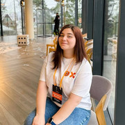
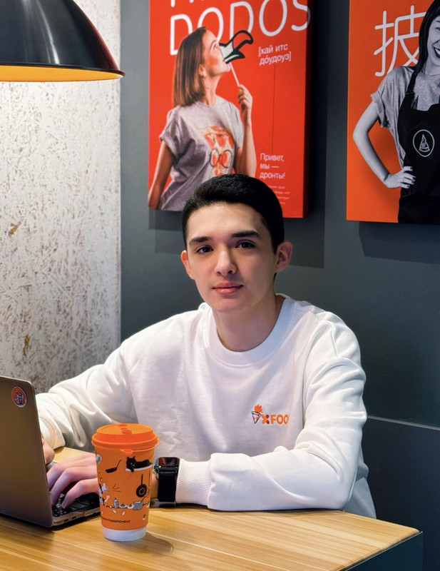

года на рынке
независимый контроль с 2023 года
Внешний онлайн-аудит операционных процессов для партнёров Додо Пиццы, Дринкит и сетей HoReCa. Реальная картина того, что происходит на сменах.
независимый контроль с 2023 года
Додо Пицца, Дринкит и другие сети
плюс кофейни и другие объекты
отчёты с тайм-кодами и видео
Шаг 1 из 4
Получаем доступы к камерам (DMSS, RedLine, сайт dodopizza.ru), проводим тестовую проверку и согласовываем тариф с партнером.
Шаг 2 из 4
Подключаемся к Додо ИС партнера, подписываем договор оказания услуг и приступаем к проведению проверок.
Шаг 3 из 4
Отчёт формируется в CRM, а результаты проверок отправляются в мессенджер. Постоплата: выставляем счёт за прошедший месяц.
Шаг 4 из 4
Ежемесячно ставим цели управляющим пиццерий и помогаем их достигать, улучшая результаты.
Наша основная цель — безопасный продукт для гостя и снижение рисков по рейтингам от УК. Каждая проверка — это отчёт с тайм-кодами, скриншотами и видео.
Перекрестное загрязнение, перемаркировка, продление срока годности, экстренная разморозка, качество мытья рук и уборки в зеленой зоне.
Соблюдение рецептов и порядка начинения, использование стаканов, качество теста и бортиков, равномерность нанесения — на всех этапах от раскатки до упаковки.
Скорость реакции на гостя, сборка и выдача, качество приготовления напитков, витрина.
Качество уборки во всех зонах, состояние инвентаря и химии.
Обходы менеджера, соблюдение принципа конвейера.
Комплексный контроль по всем камерам пиццерии.
15 000₽
в месяц · постоплата · за 1 объект
Выбрать тарифСфокусированный контроль камеры горячего цеха.
8 500₽
в месяц · постоплата · за 1 объект
Выбрать тарифКомплексный контроль всех зон кофейни.
12 000₽
в месяц · постоплата · за 1 объект
Выбрать тарифСфокусированный контроль зоны напитков.
7 500₽
в месяц · постоплата · за 1 объект
Выбрать тарифЛокальная проверка: узнайте результат раньше, чем придет инспектор УК.
3 900₽
1 проверка · разовая услуга
ЗаказатьОценка нашей эффективности на ваших объектах.
Тестовая проверка
Начать пилотСалоны, барбершопы и ритейл.
Индивидуальный расчёт
ОбсудитьКомплексный контроль ресторанов и кафе.
Индивидуальный расчёт
Обсудить7 лет с Додо

9 лет с Додо

10 лет с Додо

5 лет с Додо
10+ экспертов по всей России — от Калининграда до Хабаровска. У каждого — многолетний опыт работы с операционными процессами.
Если не нашли ответ — напишите в Telegram, ответим в течение рабочего дня.
Мы можем провести тестовую проверку уже на следующий день после заявки. Запуск регулярных проверок — с ближайшего понедельника.
Мы используем стандартные доступы (DMSS, RedLine или публичные камеры на сайте). Работаем с любыми приложениями.
Наши проверки проводятся только вручную живыми экспертами. Мы регулярно проводим ротацию экспертов между объектами, чтобы взгляд оставался свежим и объективным.
Мы требовательны и к себе, и к коллегам. Проверяем строго по стандартам УК. Если появляются спорные вопросы — ищем ответы у сотрудников УК вместе с вами.
Утренние и дневные смены публикуем день в день. Если проверка вечерняя или на закрытие — публикация утром следующего дня.
В Telegram или ВКонтакте.
У нас есть система апелляций: мы детально рассмотрим ваш тикет и вернем баллы при необходимости. Также мы обязательно дадим обратную связь эксперту, чтобы не допускать подобного в будущем.
Нет. Наоборот, мы выявляем системные ошибки до того, как придет проверка УК, помогая вам сохранить высокий рейтинг.
Да, мы не разглашаем результаты аудитов для УК или третьих лиц.
Получите реальный отчёт и решите, нужно ли вам это.